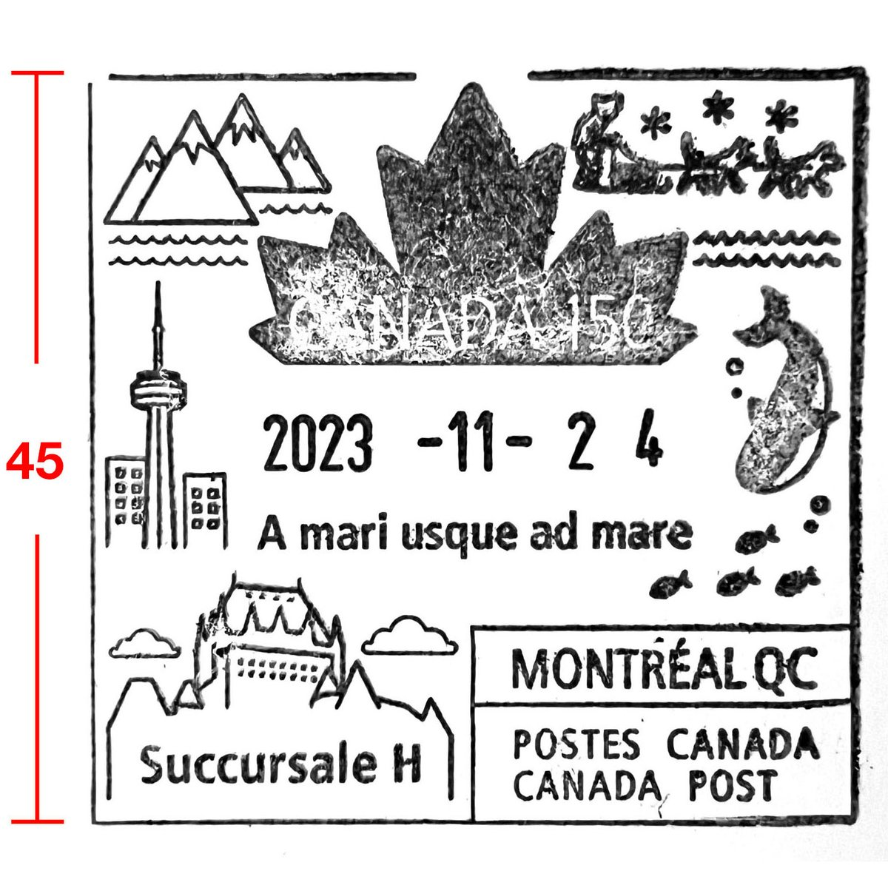

BP Montréal H pictorial cancel
A mari usque ad mare – Succursale H
- Status
- Expired
- Run dates
- 2014-01-01 to 2025-12-31
- Design
- "A mari usque ad mare / Succursale H"; Canada's 150th anniversary: mountains, maple leaf, sled dogs; Toronto CN Tower, whale; Château Frontenac in Quebec City
- Ink colour
- Black
- Designer
- Unknown
- Post office
- BP Montréal H
1974 Ste Catherine O
Montreal, QC
H3H 1N0 - Subjects
- Canada 150, celebration, anniversary, landmark, architecture, building, animal, whale, dog, mountain, nature
- Notes
- BP Montréal PL-Desjardins has the same cancel; only the post office name differs.
This cancel is retired, so the post office can no longer apply it. Covers with it turn up from dealers and other collectors.
 BP Montréal WestmountFrench
BP Montréal WestmountFrench BP Montréal WestmountEnglish
BP Montréal WestmountEnglish BP Montréal BCityscape
BP Montréal BCityscape BP Montréal BChinese
BP Montréal BChinese